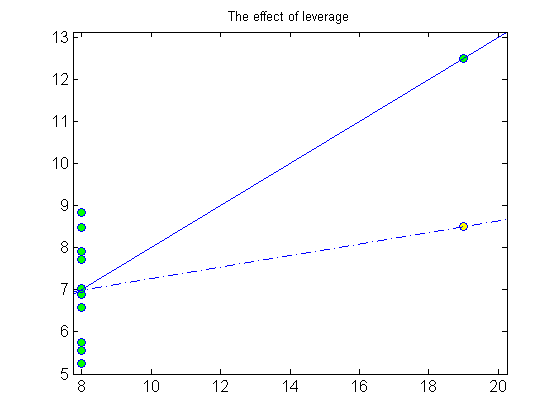
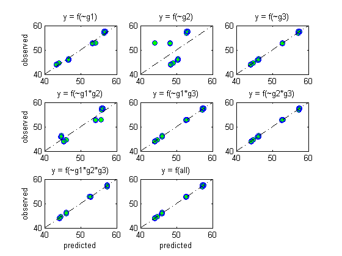
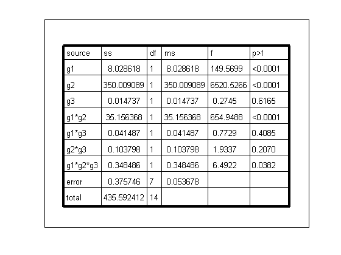
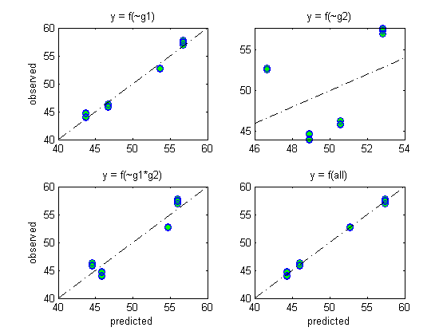

Model Validation Tutorial
Hypothesis testing based on a model that is invalid can lead to faulty conclusions. this tutorial goes over a few basic diagnostic procedures that can be used to test whether a model is valid.
Contents
- fit statistic
- problem with fit
- lack of fit introduction
- Lack of fit using pseudo-replication
- Outlying response (measurement error)
- Studentized residuals spot outlying response
- Residual plots
- Outliers in X (The effect of leverage)
- Leverage plot
- unequal variance
- diagnosing unequal variance
- Dropped variable plot
fit statistic
The fit statistic is related to the correlation coefficient. The figure shows the total variation in the data decomposed into its constituent parts. The blue line represents the total variation. It goes from the measured point to the overall average. The sum of this distance squared is equal to the total sums of squares. The red line represents the variation explained by the regression model. It extends from the fitted line to the overal average and the sum of its length squared. Finally the residual error is represented by the green line. This is the amount of variation that is not explained by the regression. It extends from the line to the measured point. r^2 is the red/blue lengths squared is the percentage of the total variance that is explained by the line. In this model the sum of squares are additive so that SS(total) = SS(explained) + SS(error)
load remedial.mat clf, set(gca,'nextplot', 'replace') i = 1; y = yy(:,i); ybar = mean(y); plot(xx(:,i), y, 'o', 'markerfacecolor', 'g', 'markersize', 4 ); border = [ -.25 .25 0 0 ]; a = axis + border; axis(a); ylabel('response'); xlabel('predictor variable'); h = refline( 0, mean(y) ); set(h,'linestyle', '-.', 'color', 'k'); text( 0.05, ybar + 1, 'ybar'); i = 1; glm = encode(y, 0, 1, xx(:,i) ); glm.ls = mstats(glm); refline(glm.ls.beta(2), glm.ls.beta(1) ); x = xx(:,i); a = .075; for i = 1:length(y) line( [x(i)-a x(i)-a], [y(i), ybar], 'color', 'b' ); line( [x(i)+a x(i)+a], [y(i), glm.ls.yhat(i)], 'color', 'g' ); line( [x(i) x(i) ], [ybar, glm.ls.yhat(i)], 'color', 'r' ); end; text( 9,6, 'blue length^2 = 41.27', 'fontsize', 12 ); text( 9,5.5, 'red length^2 = 27.51', 'fontsize', 12 ); text( 9,5.0, 'green length^2 = 13.76', 'fontsize', 12 ); text( 9, 4.5, ' r^2 = red/blue', 'fontsize', 12 ); set(gca,'fontsize',12);

problem with fit
%Here is an interesting set of examples taken from the Ascombe dataset. %Believe it or not each of the above plots have the same correlation %coefficient, the same intercept and the same slope. It should be obvious %that correlation doesn't capture important details about these data. The %next set of slides will explain a better way to diagnose problems %like these. Panel A shows a good fit with no serious problems with model %assumptions. The other panels have various problems, and I'll show how to %identify these types of problems below, while refering to this figure by %the panel letters clf, set(gca,'nextplot', 'replace') lab = {'A' 'B' 'C' 'D' }; for i = 1:4 subplot(2,2,i); plot( xx(:,i), yy(:,i), 'bo', 'markerfacecolor', 'g' ); h = refline; set(h, 'linestyle', '-.'); [x,y] = getAxisInset( .05,.9 ); text(x,y,lab{i}, 'fontweight', 'bold'); end;

lack of fit introduction
Lack of fit is an excelent statistic for linear regression models with continuous variables. If we use the example from panel B above you'll see what I mean. In this graph there is a clear curvature present and we are trying to fit a line to the data. Lack-of-fit will reveal this problem nicely. Lack-of-fit breaks down the residual error into two parts. First is the part of the error that could be explained if each level of X were treated as a categorical variable. Second is the part that can't be explained. The latter is sometimes called pure error. The lack-of-fit test compares the amount of error explained by the categorical encoding to the pure error. A high ratio means that the data are not well fit by a line. The graph illustrates how the error is broken down. The error from a linear regression model with a x treated as a continous variable is the distance^2 from the regression line to each point. The red and green lines show this broken down into explainable (red) and pure (green) parts. The p-value is calculated like this lof(glm), where glm is the model for continuos x A small p-value indicates the data aren't well modeled by a line
% load the data load remedial.mat; figure x = xx(:,2); % curved dataset y = yy(:,2); % curved dataset [x order] = sort(x); y = y(order); % lof requires replication so lets duplicate the y-values % and add some noise e = 1; % make constant error for illustration y = [y; y+e]; % replicate y plus error x = [x; x]; % replicate fixed x (no extra error) % plot x and y with a best-fit line plot(x,y, 'o', 'markerfacecolor', 'k', 'markersize', 4, 'color', 'k'); refline; a = axis; a([ 1 2 3]) = [ 2.5 14.5 2.5]; axis(a); % calculate mean response for each level of x glm = encode(y, 3, 1, x ); % encode x as categorical u = lsestimates( glm ); % least-squares estimates for y hold on; % plot mean responses xx = 4:14; for i = 1:length(xx) % draw short hash line at the mean response for each x line( [xx(i)-.25 xx(i)+.25], [u.beta(i+1) u.beta(i+1)] ); end % draw a line from the mean response to the least-square line % this is the amount explainable by a better fit % the mean response are the u from lsestimates gmean = u.beta(2:end); % group mean % the predicted value of y at each x is still needed. glm = encode( y, 0, 1, x ); ls = mstats(glm); lsline = x2fx(xx')*ls.beta; % yhat at lnispace xx for i = 1:length(xx) % for first point in the replicate h = line( [xx(i) xx(i)], [lsline(i) gmean(i)] ); set(h,'color', 'r'); % for second replicate h = line( [xx(i)-.1 xx(i)-.1], [lsline(i) gmean(i)] ); set(h,'color', 'r'); end % now draw a line from the response to the group mean xx = x; xx(1:10) = xx(1:10)-.1; xx(11:end) = xx(11:end)+.1; for i = 1:length(xx) h = line( [xx(i) xx(i)], [y(i) u.yhat(i)] ); set(h,'color', 'g'); end; [tx,ty] = getAxisInset( .5, .3 ); text(tx,ty, '$1/n\sum red^2 =$ explainable error', ... 'interpreter', 'latex'); [tx,ty] = getAxisInset( .5, .25 ); text(tx,ty, '$1/n\sum green^2 =$ pure error', ... 'interpreter', 'latex'); [tx,ty] = getAxisInset( .5, .20 ); text(tx,ty, 'F = exlainable/pure', 'interpreter', 'latex'); % When the data contain replication you need to build a linear model with % continuous x then call lof(glm) glm = encode( y, 0, 1, x ); l = lof(glm); [tx,ty] = getAxisInset( .5, .15 ); text(tx,ty, sprintf( 'p = %.4f', l.pval), 'interpreter', 'latex');

Lack of fit using pseudo-replication
If there is no replication, it often suffices to bin the x's into groups and treat each group as a replicate. I'll illustrate with the data from panel B. The color and shape of the markers indicates the binning. In general, the results maybe sensitive to how the data are binned. With these data you can see that binning reduces the signficance of the non-linearity, but the curvature is still detectable at a p-value < .05.
figure load remedial x = xx(:,2); y = yy(:,2); % plot x and y with a best-fit line plot(x,y, '.'); refline; a = axis; a([ 1 2 3]) = [ 2.5 14.5 2.5]; axis(a); hold on; [n, bidx] = histc( x, 4:2:14 ); % bin x [h, legh] = mscatter( x, y, bidx, bidx ); % color graph delete(legh(1:2)); % calculate mean response for each level of x glm = encode(y, 0, 1, bidx ); % encode x as continuous l = lof(glm); [tx,ty] = getAxisInset( .5, .15 ); text(tx,ty, sprintf( 'lack of fit (p = %.4f)', l.pval), 'interpreter', 'latex');

Outlying response (measurement error)
In panel C there is a reponse that has an especially poor fit to the modeled line. The effect this response has on the line is shown by the green line compared to the dashed blue line which is the best fitting line if the green point is ignored. It is not generally a good idea to remove data from a dataset unless there is some physically justifiable reason. For example, in biological assays this can happen during high-throughput measurements because of mechnical failure to deliver the proper amount of reagents to the reaction. Outlying response don't always have a undue effect on the analysis you want to do. Often the desired result is achieved without removing data.
clf, set(gca,'nextplot', 'replace') i = 3; x = xx(:,i); y = yy(:,i); plot( xx(:,i), yy(:,i), 'bo', 'markerfacecolor', 'g' ); hold on; y(3) = []; x(3) = []; plot( x, y, 'bo', 'markerfacecolor', 'y' ); a = axis; axis(a+border); h = refline; set(h(1),'linestyle', '-.'); set(h(2),'color', 'g'); title('The effect of outliers'); set(gca,'fontsize', 12);

Studentized residuals spot outlying response
residuals are frequently used to diagnose poorly fitting models. The top plot shows a scatter plot with one large outlier and the bottom plot shows the studentized residuals, which strongly emphasizes the outliers. the principal behind this analysis is to build a model and estimate the model error independent of the point we are trying to study. The residual error is then standarized by the independently estimated error. This is a great way to find outliers if there are very few (e.g. 1) in the dataset, otherwise a different robust measure of error is required. The principal is the same. First estimate the error without the questionable data and then standardize the residual errors and plot them.
i = 3; x = xx(:,i); y = yy(:,i); e = y + normrnd(0,.1*mean(y),size(y)); subplot(2,1,1); plot( x,y+e,'bo', 'markerfacecolor', 'g' ); refline; title('The effect of outliers'); ylabel('response'); subplot(2,1,2); rs = regstats( y, x ); plot( x, rs.studres, 'bd', 'markerfacecolor', 'g'); a = axis; axis(a+border); ylabel('std deviations'); title('studentized residuals');

Residual plots
Residuals plots are useful to reveal model problems. The top plot shows a curve-linear relatinship that is modeled by a straight line. There are several ways to look at the residual. One way is to plot them in the order the data were gathered. This can reveal systematic bias in the data gathering over time. If the data were collected in batches, for example, the residual error may reflect batch-to-batch variability (even if you didn't know the data were gathered this way). If you find systematic patterning in the data, you may want to look for a cause that you can include in the model. Another way to look at residuals is by comparing the predicited value of a response to the residual error. The data in the plot come from panel B above. These data are clearly curvilinear, which is often easier to see when they are rotated horizontally. The residual plot is draw using resid_olot( mstats(glm)). The data are automatically binned (or colored by extra input arguments) to aid in identifying certain patterns.
clf, set(gca,'nextplot', 'replace') x = xx(:,2); y = yy(:,2); subplot(2,1,1); plot( x,y,'bo', 'markerfacecolor', 'g' ); refline; title('bad fit'); ylabel('response'); subplot( 2,1,2); glm = encode( y, 0, 1, x ); resid_plot( mstats(glm) );

Outliers in X (The effect of leverage)
The data here are from Panel D above and has a major problem with leverage at x=19. Two possible responses are shown for the x=19. as you see the the line always go through the point. Thus the point at x=19 has perfect leverage on the line. This is a sign of a bad design or unlucky observational data. A high leverage point isn't bad in-and-of itself, it is simply dangerous. It makes the measurement at that value extremely important compared to other measurements. An outlying y-value at a level of x with poor leverage, won't matter as much as an outlying response at a level of higher lverage. With continuous values of x values farthest from the mean have the most leverage. With categorical variables it is the levels with the fewest replicates that have the most leverage. In experimental design it is important to keep leverage in mind. With categorical variables a balanced design is usually best. With continous variables it is more comlicated, but replication on each end of a line is more useful than replication near the mean because the data near the ends are more influential and these are the ones you'll want he best estimates
load remedial clf, set(gca,'nextplot', 'replace') x = xx(:,4); y = yy(:,4); y(8) = y(8) - 4; plot( x, y, 'bo', 'markerfacecolor', 'y' ); hold on; plot( xx(:,4), yy(:,4), 'bo', 'markerfacecolor', 'g' ); a = axis; axis(a+border); h = refline; title('The effect of leverage') set(gca,'fontsize', 12); set(h(2),'linestyle', '-.');
Leverage plot
leverage_plot lets you investigate outlying x observations here is the leverage plot for the plot above
clf, set(gca,'nextplot', 'replace') glm = encode(yy(:,4), 0, 1, xx(:,4)); leverage_plot(glm); title('leverage plot', 'fontsize', 12);

unequal variance
Our linear models assume that the error variance is constant for all levels of x. It is therefore a violation of our assumptions if variance, for example, increases with levels as x increases. Here is a scatter plot showing (non-obvious) a dataset with unequal variance (heteroscedastic)
clf, set(gca,'nextplot', 'replace') x = (1:100)'; y = x; e = normrnd( 0, .1, size(y) ).*sqrt(x); plot( x, y+e, 'bo', 'markerfacecolor', 'y' ); title('unequal variance');

diagnosing unequal variance
To diagnose the problem you could use variance_plot or even resid_plot. Here I show the scatterplot in the top panel and the variance plot in the bottom panel. Now the unequal variance is obvious. the breush_pagen test is used to formally test the signifance of the unequal variance
clf, set(gca,'nextplot', 'replace') subplot( 2,1,1); plot(x, y+e, 'bo', 'markerfacecolor', 'y' ); title('unequal variance'); subplot( 2,1,2); glm = encode( y+e, 0, 1, x ); variance_plot( mstats(glm) ); [x,y] = getAxisInset(.5,.8); text(x,y,sprintf( 'breusch pagan test: p = %.4f', breusch_pagan(glm)) );

Dropped variable plot
A dropped variable plot help visualize the effect of each variable in a model. It goes hand-in-hand with an anova, because it shows how each model accounts for the overall variability in the model I've used the weather example here and a sstype III anova. The whole plot was produced using dvplot(glm). Each panel shows the residual plot after dropping the given variable from the model. Each panel should be compared to its reference plot, which, in this case, is the last plot. The last plot is a function of all variable, f(all). Visual inspection shows that dropping g1 from the reference adds a bit of noise. There also appears to be non-random pattern in the residuals. This would be a problem for models not-including g1. dropping g2, f(~g2), is devasting. There is a huge amount of variation explained by g2,while dropping g3 has little effect. similarily dropping interactions including g3 are do not appear to be very important. This should all be reflected by looking at the results of an anova.
% dvplot takes the same arguments as anova clf, set(gca,'nextplot', 'replace') load weather glm = encode( y, 3, 3, g1, g2, g3 ); dvplot(glm); % look at anova results figure a = anova(glm); a.source = regexprep( a.source, '\|.*$', ''); plot_table(anova_table(a)); % revise model and exclude g3 figure glm = encode( y, 3, 3, g1, g2 ); % setting degree > number of variable uses largest possible degree dvplot(glm);  